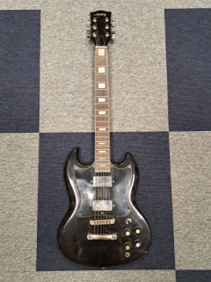
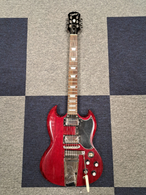
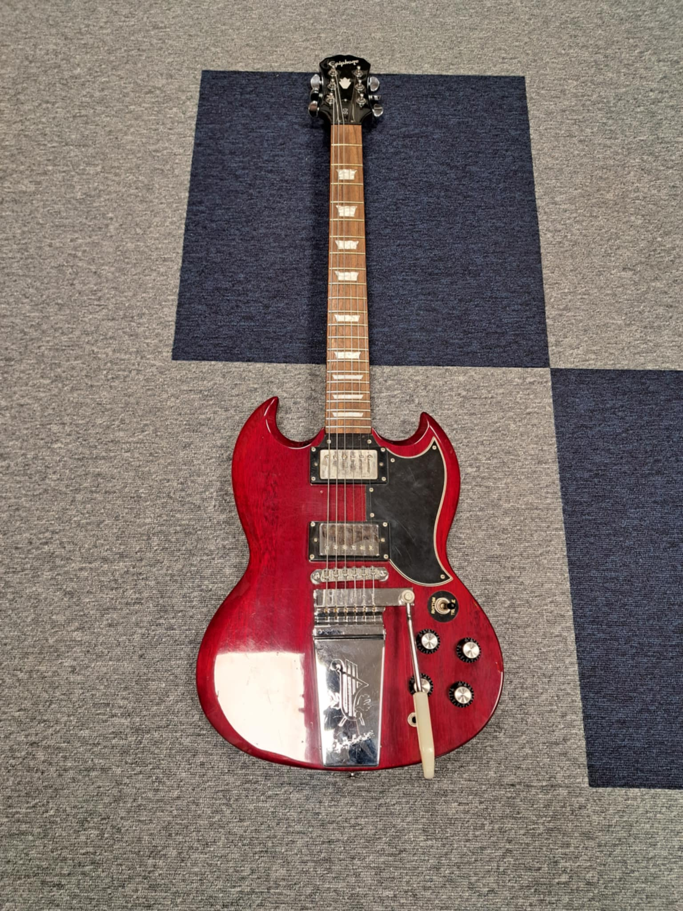
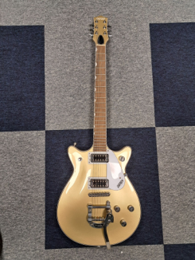
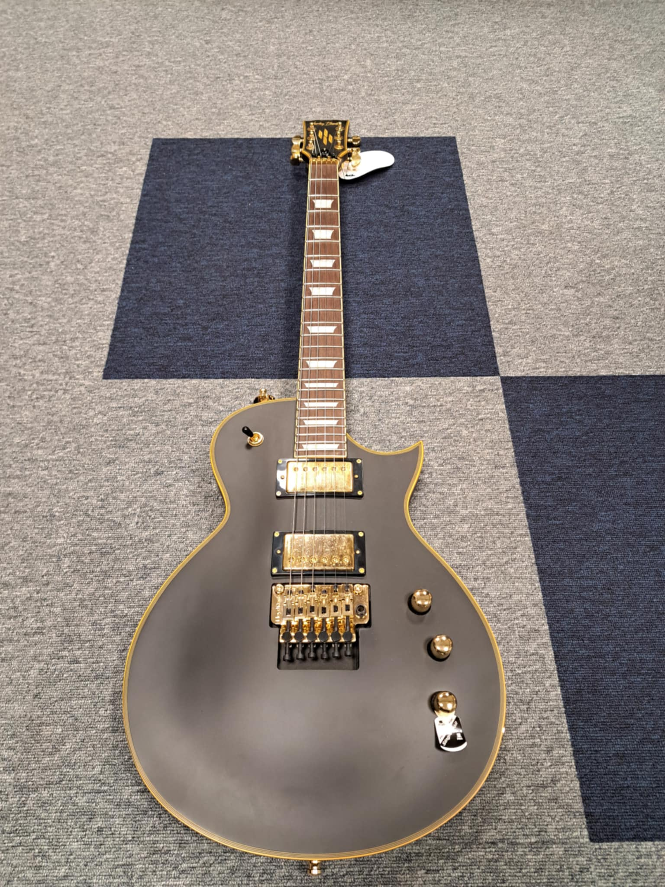
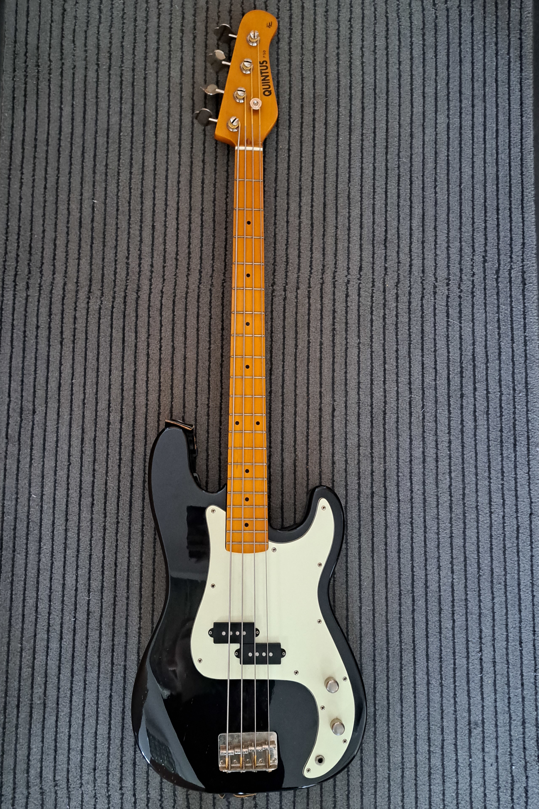
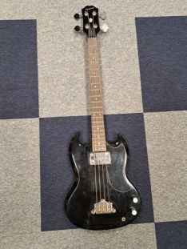

Introduction
We propose Guitar Audio Dataset for AI, a novel open-source dataset curated to support research in guitar audio analysis, signal processing, and machine learning applications. The dataset stands out by featuring a wide range of electric, acoustic, and bass guitars. To evaluate the utility of G.A.D.A. in machine learning contexts, we propose a testing framework incorporating established machine learning algorithms, achieving classification accuracies of up to 99%.
Dataset Specification
Audio content
GADA contains over 4000 recording samples of chords and notes on various guitar models.
- - 3 guitarists,
- - 10 tracks of each setting,
- - All possible pickup settings for each guitar and each chord,
- - Tone and Volume knobs set to max,
- - 13 guitars overall.
Recording methods
High-quality guitar audio was captured using specialized methods depending on the instrument type, ensuring fidelity and consistency.
- - DI (Direct Injection) for electric and bass guitars,
- - Neumann TLM 103 condenser microphone for acoustic guitars,
- - 32-bit / 48 kHz WAV recordings via Focusrite Scarlett Solo.
Recording metadata
Each audio file is systematically named to easily locate all sample settings.
- - Guitar model, chord, voicing, settings, player ID,
- - File format: GuitarModel_ChordName_Position_SettingsKnob__PlayerID_SampleNumber.wav,
- - Metadata includes tone/volume knob settings and pickup configuration.
Guitars of the dataset
| Electric | Arirang SG |  | Vintage-style SG with dual humbuckers, offering warm mids and classic rock tones. |
| Electric | Epiphone SG (Model 1) |  | Affordable take on the Gibson SG with twin humbuckers and punchy, aggressive tone. |
| Electric | Epiphone SG (Model 2) |  | Another piece of the same guitar as above. |
| Electric | Gretsch |  | Classic semi-hollow design known for its jangly clean tones and smooth jazz/blues sound. |
| Electric | Harley Benton Les Paul |  | Solid-body LP-style guitar with thick sustain and dual humbuckers for rich, heavy tones. |
| Electric | Harley Benton TE-52 NA |  |
Telecaster-style guitar with classic single-coil brightness and vintage aesthetics. |
| Electric | Harley Benton Telecaster | Budget-friendly Telecaster-style model with a sharp, twangy tone ideal for country and rock. | |
| Electric | Harley Benton Stratocaster | Strat-style guitar with three single-coils, offering crisp cleans and bluesy leads. | |
| Acoustic | Vintage V300VSB |  |
Compact folk-style acoustic with a warm, resonant tone and great playability. |
| Acoustic | T. Burton J-0 BS |  |
Well-balanced jumbo-style acoustic offering rich lows and articulate highs. |
| Bass | Quintus SG Bass |  | Short-scale bass with vintage SG-style body, delivering warm and punchy tones. |
| Bass | Epiphone SG Bass |  | Classic EB-style bass with deep, rounded tone and smooth neck for fast playability. |
| Bass | Epiphone Bass |  |
Full-scale bass with versatile electronics and vintage aesthetics, suited for all genres. |
Recording samples
We present a selection of samples within the G.A.D.A dataset:
Electric guitars:
| a-minor Settings1 | a-minor Settings2 | C-major Settings1 | C-major Settings2 | |
|---|---|---|---|---|
| Epiphone SG (1) | ||||
| Epiphone SG (2) | ||||
| Harley Benton Les Paul | ||||
| SHarley Benton TE 52 | ||||
| Arirang GS |
Bass guitars:
| C note | D note | F note | G# note | |
|---|---|---|---|---|
| Epiphone Bass | ||||
| Quintuss Bass |
Acoustic guitars:
| a-minor | C-major | F-major | d-minor | |
|---|---|---|---|---|
| Vintage V300VSB | ||||
| T. Burton |
Visualization of guitar models